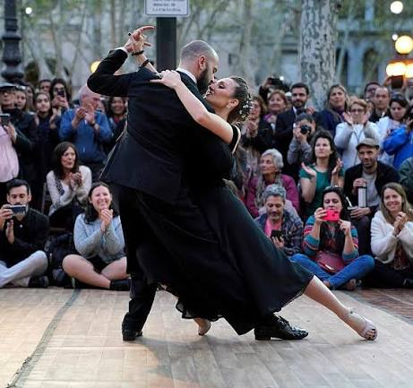

A cultura argentina
A Argentina possui uma cultura rica e diversificada, formada pela influência de diferentes povos ao longo de sua história. A música, a dança, a gastronomia e os costumes tradicionais fazem parte da identidade do país e são conhecidos em diversas partes do mundo.
O Tango

O tango é uma das expressões culturais mais conhecidas e tradicionais da Argentina. Surgiu na região do Rio da Prata, principalmente em Buenos Aires, no final do século XIX. A dança é marcada por movimentos elegantes e pela conexão entre os dançarinos. Atualmente, o tango é reconhecido mundialmente como um símbolo da cultura argentina.
A Gastronomia
A gastronomia argentina é conhecida por seus pratos tradicionais e pela importância das refeições em família. O asado, preparado com carnes na churrasqueira, é um dos costumes mais populares do país. Outros alimentos famosos são as empanadas, o doce de leite e o alfajor. Essas comidas fazem parte do cotidiano e das celebrações dos argentinos.
As Tradições
Entre os costumes mais tradicionais da Argentina está o hábito de tomar mate, uma bebida preparada com erva-mate e água quente. O mate costuma ser compartilhado entre familiares e amigos. Outra figura importante é o gaúcho, ligado à vida no campo e à criação de animais. Essas tradições representam parte da história e da identidade cultural argentina.